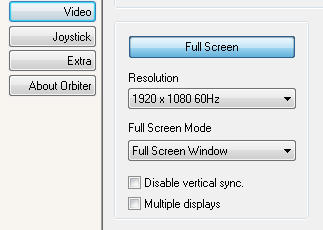
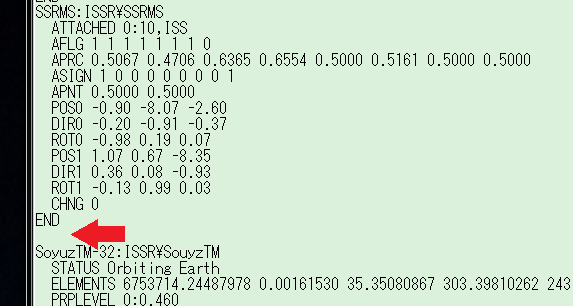
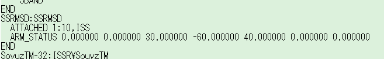
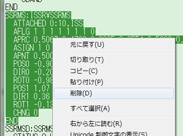
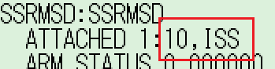

Canadarm2MODのダウンロード+インストール
Canadarm2は、ISSに搭載されているカナダアーム2の機能を再現したMODです。
Canadarm2MODの操作・移動方法
ISS v3.2やISS A to Zのカナダアームと比べて、Canadarm2はより使いやすく再現度が高くなっています。
ダウンロード+インストール
ダウンロードは以下のリンクから。
Canadarm2v4.0
ダウンロードしたファイルを解凍して、中身をOrbiterのインストールフォルダに上書き。
Orbiter2016
Orbiter2016で使用する場合は、以下のMODを導入してください。
ダウンロードしたファイルを解凍して、SSRMSD.dllをコピー。
Orbiter2016\Modulesフォルダを開いて貼り付ける（既存のファイルを上書きする）。
Windows10
Windows10環境において、ゲームの開始時に強制終了する場合は、以下のファイルを試してみてください。
OHM Canadarm2 v 4.0 - Page 4 - Orbiter-Forum※
※ダウンロードにはOrbiter Forumのアカウントが必要
重要：このファイルをOrbiter2010で使用する場合は、コクピット視点（F1キー）にはしないでください。
操作
操作方法については、以下の記事を参照してください。
接続が不安定なときは
このMODをD3D9Clientと同時に使うと、ペイロードとの接続が不安定になることがあるようです。
LaunchpadのVideoタブで、Disable vertical syncのチェックを外すことで症状が改善する可能性があります。

セーブデータに違いはないので、どうしても改善しない場合は、一時的にOrbiter.exeでプレイしてみてください。
シナリオに追加する
ISS v3.2のSTS-104シナリオを例に説明します。
STS-104 (Atlantis).scnをメモ帳で開く。
以下の行で始まる項目を探す。
SSRMS:ISSR\SSRMS
ENDの次に改行を入れる。

空いた行に、以下をコピーして貼り付ける。
SSRMSD:SSRMSD
ATTACHED 1:10,ISS
ARM_STATUS 0.000000 0.000000 30.000000 -60.000000 40.000000 0.000000 0.000000
END
うまくコピペできない場合は、以下の画像を参考にしてください。

もとのSSRMSを消して、空いた行を詰める。

ほかのシナリオの場合、アームの取り付け先のモジュールと取り付け位置を変更する必要があります。
重要：赤で囲んだ部分以外は変更しないでください。

10がアームの取り付け位置、ISSが取り付け先の宇宙船の名前です。
この場合の取り付け先はISSになっていますが、シナリオによってはMBSやHarmonyになっています。
もとのSSRMSの情報を参考にして書き換えてください。